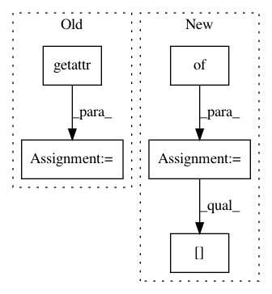

79edae58d5892c5a7eb19b68f9e79dfae4682e20,keras/backend/tensorflow_backend.py,Function,__call__,#Function#Any#,970
Before Change
def __call__(self, inputs):
assert type(inputs) in {list, tuple}
names = [getattr(v, "name", None) for v in self.inputs]
feed_dict = dict(zip(names, inputs))
session = get_session()
updated = session.run(self.outputs + [self.updates_op], feed_dict=feed_dict)
return updated[:len(self.outputs)]
After Change
def __call__(self, inputs):
assert type(inputs) in {list, tuple}
feed_dict = {}
for tensor, value in zip(self.inputs, inputs):
if is_sparse(tensor):
sparse_coo = value.tocoo()
indices = np.concatenate((np.expand_dims(sparse_coo.row, 1), np.expand_dims(sparse_coo.col, 1)), 1)
value = (indices, value.data, value.shape)
feed_dict[tensor] = value
session = get_session()
updated = session.run(self.outputs + [self.updates_op], feed_dict=feed_dict)
return updated[:len(self.outputs)]
In pattern: SUPERPATTERN
Frequency: 3
Non-data size: 5
Instances
Project Name: keras-team/keras
Commit Name: 79edae58d5892c5a7eb19b68f9e79dfae4682e20
Time: 2016-09-09
Author: kuza55@gmail.com
File Name: keras/backend/tensorflow_backend.py
Class Name: Function
Method Name: __call__
Project Name: regel/loudml
Commit Name: eb83dae02b63b9a91492c3bcabf790163419a00d
Time: 2018-05-07
Author: vianney.bajart@gmail.com
File Name: loudml-import/loudml/import_tool.py
Class Name:
Method Name: main
Project Name: rail-berkeley/softlearning
Commit Name: 0e49e55d906660e5c9168447c77ebc6d917dda5c
Time: 2018-10-22
Author: hartikainen@berkeley.edu
File Name: softlearning/samplers/utils.py
Class Name:
Method Name: get_sampler_from_variant